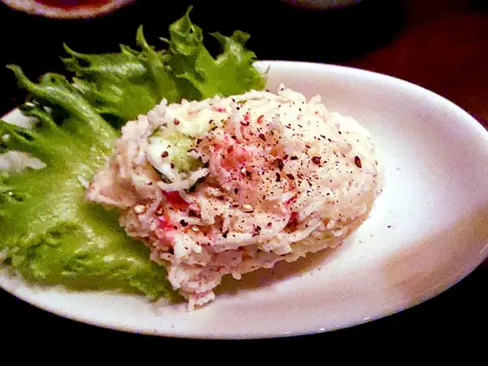

Фото: Artoria2e5, CC BY-SA 4.0

Крабовый салат
Крабовые палочки с яйцом, кукурузой, рисом и огурцом под майонезом
35 мин6 порц.345 ккал на порциюБ 12 · Ж 22 · У 25Русская кухня
Продукты на 6 порц.
- Крабовые палочки2 шт
- Яйцо куриное4 шт
- Кукуруза консервированная1 шт
- Рис0,5 стак.
- Огурцы1 шт
- Зелёный лук по желаниюпо вкусу
- Майонез150 г
- Сольпо вкусу
- Вода1500 мл
Как готовить
- Промойте рис, отварите в подсоленной воде на среднем огне 15 минут до мягкости, откиньте на сито и остудите.
- Сварите яйца вкрутую: 10 минут после закипания, остудите в холодной воде и очистите.
- Нарежьте крабовые палочки, яйца и огурец кубиком.
- Слейте жидкость с кукурузы.
- Соедините всё в миске, добавьте рубленый зелёный лук.
- Заправьте майонезом, посолите по вкусу и перемешайте.
Совет. Рис должен быть рассыпчатым и полностью остывшим, иначе салат слипнется. Для лёгкого варианта рис не добавляйте, а майонез наполовину замените йогуртом.